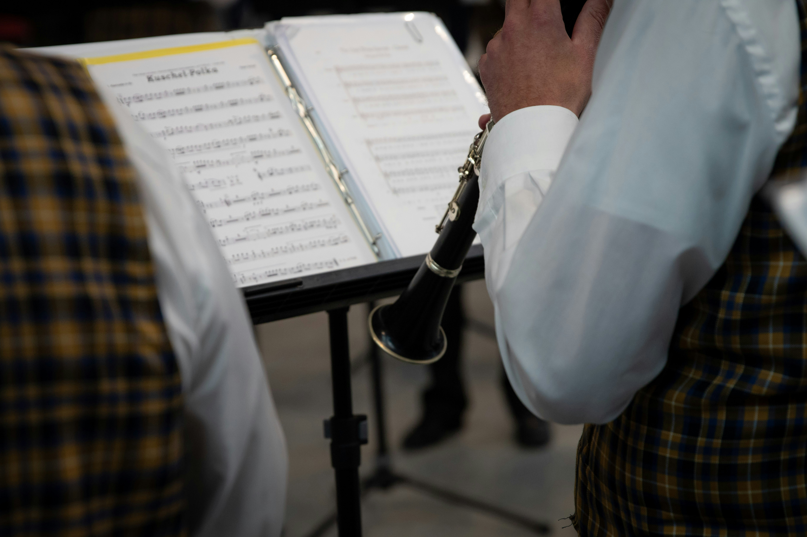

Description:
The oboe is a woodwind instrument known for its clear, focused, and slightly nasal sound. It is commonly used in orchestras, concert bands, chamber groups, and solo music. The main parts of an oboe include the double reed, upper joint, lower joint, keys, tone holes, and bell. Its narrow body and small double reed give it a very distinctive sound compared with other woodwind instruments.

How to Play the Oboe:
The oboe is played by blowing air through a double reed made of two thin pieces of cane. The player presses different combinations of keys to open and close tone holes, which changes the notes. Producing a steady sound requires careful breath control and precise control of the reed with the lips.